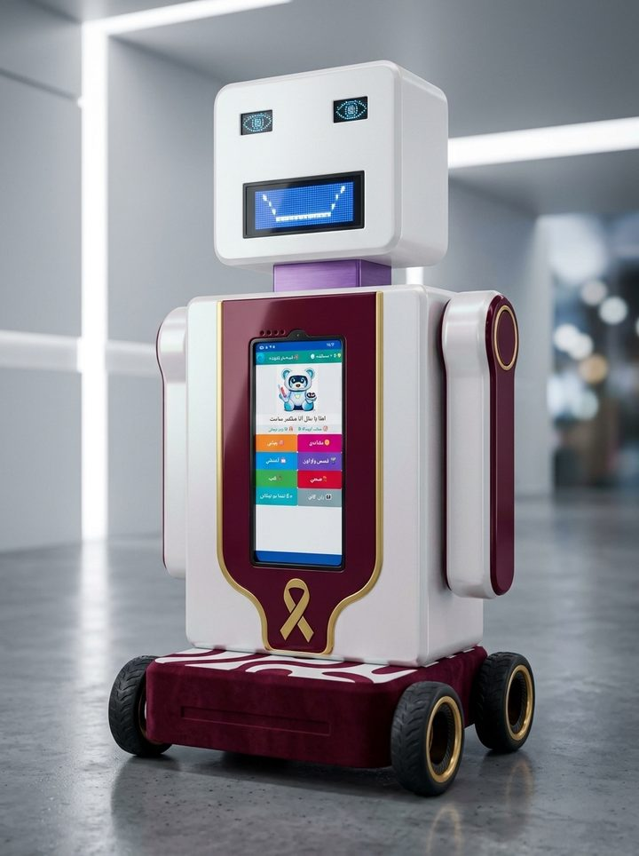

بيتحرك لوحده
من غير تحكم. بيتفادى العوائق بالحساسات ويروح للطفل بنفسه.
صاحب بيفهم الطفل، ويقف جنبه في رحلة العلاج.

السنة اللي فاتت، قريبي الصغير كان بيحارب السرطان. مكنش تعبان من المرض بس، كان تعبان من الخوف والوحدة، ومعندوش طاقة يلعب مع أطفال في سنه. من هنا بدأت فكرة روبوت يكون معاه، يفهم تعبيرات وشه، ويحاول يخفف عنه.
إحنا قدرنا نعالج المرض... بس مين هيعالج الخوف؟
من غير تحكم. بيتفادى العوائق بالحساسات ويروح للطفل بنفسه.
كاميرا التلفون بتميز تعبيرات الوش: حزن، حياد، سعادة.
حسب التعبير، يعرض رسالة تشجيع أو رسوم متحركة مناسبة للحالة.
الذراع بتقيس الحرارة ونبض القلب ونسبة الأكسجين، والطفل يحسبها لعب مش فحص.
تذكير بمواعيد الأدوية من غير ما حد يفكره.
القراءات توصل لولي الأمر في مكان واحد على التطبيق.
Healix مش بيعالج ولا بيشخص أي مرض، لكنه بيقدم الدعم والتشجيع للطفل.
الروبوت مرتبط بتطبيق موبايل، فيه أزرار بسيطة للطفل بتخفف الضغط النفسي أثناء وبعد جلسات الكيماوي.
وولي الأمر يتابع الحرارة والنبض والأكسجين من صفحة صحتي.
طفل ومراهق من الولادة لحد 19 سنة بيصابوا بالسرطان كل سنة في العالم.
مستشفيات زي 57357 محتاجة تهتم بمشاعر الأطفال وراحتهم النفسية زي ما بتهتم بأجسامهم. Healix بيدخل الجزء ده في يوم الطفل.
هنتواصل مع المستشفيات ومراكز علاج الأطفال، ونعرض عليهم نموذج عملي يوضح طريقة عمل Healix، ونعمل شراكات مع متخصصين في رعاية الأطفال.